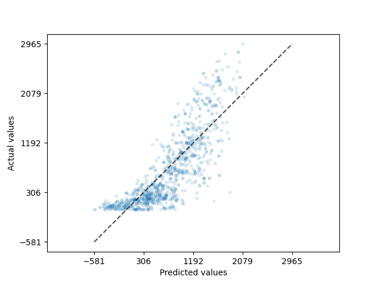

| index | Rented Bike Count | Hour | Temperature | Humidity | Wind speed | Visibility |
|---|---|---|---|---|---|---|
| mean | 707.78 | 11.5 | 12.9 | 58.35 | 1.73 | 1429.72 |
| std | 649.45 | 6.9 | 11.88 | 20.38 | 1.03 | 612.06 |
| min | 0 | 0 | -17.5 | 0 | 0 | 27 |
| 25% | 193 | 6 | 3.5 | 43 | 1 | 923.75 |
| 50% | 508.5 | 12 | 13.8 | 57 | 1.5 | 1693 |
| 75% | 1062.25 | 17 | 22.4 | 74 | 2.3 | 2000 |
| max | 3556 | 23 | 39.4 | 98 | 7.3 | 2000 |
Predicting bike-share program usage from weather conditions
Summary
In this analysis, we developed two regression model using the decision tree algorithm and the ridge regression algorithm to compare their ability to predict the number of bikes being rented out from a bike share program based on the weather conditions of the hour and general information about the day. After training the model, the model’s performances were evaluated on an unseen data set, where the decision tree algorithm achieved a \(R^2\) of 0.8 and the ridge regression algorithm obtained a \(R^2\) of 0.68. The results indicates that the regression model was able to better capture the key factors influencing the number of bike rented within a reasonable range of accuracy. This makes it a practical tool for forecasting bike demand. By utilizing weather conditions and temporal features, this model can assist bike-sharing programs in optimizing resource allocation, ensuring bikes are available when needed, and improving overall service efficiency.
Introduction
Over the past 2 decades, a growing number of countries worldwide have introduced bike-sharing programs as an integral part of their urban transportation systems (Shaheen, Guzman, and Zhang 2012). These initiatives are often designed to address the “last mile” problem – a common challenge in public transit to get passengers from a transportation hub, like train stations and bus stops, to their final destination. By providing a sustainable, accessible, and cost-effective mode of transportation for short trips, bike-share programs have become a popular solution to close this gap (Shaheen, Guzman, and Zhang 2012).
The demand and usage of bike-share programs are known to be heavily influenced by the weather conditions (Eren and Uz 2020). Factors such as temperature, precipitation, humidity, and wind speed all have an affect the number of bikes being used at any given time. Understanding these relationships is crucial for the effective management of bike-share systems.
In this study, we explore whether a machine learning algorithm can predict the usage of bike-share program. It is important to accurately predict usage of the bikes as it gives organizers the ability to plan ahead and make sure there is a stable supply of bikes to match the fluctuating demands. This ensures an efficient allocation of resources and ultimately improve the overall performance of the bike-share programs.
Methods
Data
The data set used in this project is the Seoul bike sharing demand data set created by Dr Sathishkumar V.E., Dr Jangwoo Park, and Dr Yongyun Cho from Sunchon National University (Sathishkumar, Park, and Cho 2020). It was sourced from the UCI Machine Learning Repository (Dua, Graff, et al. 2017) and can be found here. Each row in the data set represents the number of bikes being rented at a specific hour of a day, along with corresponding weather conditions (e.g. temperature, humidity, and rainfall), whether the day was a holiday, and if the bike share program was functioning that day.
Analysis
We developed compared two regression model that predicts the number of bikes being rented out for a specific hour of the day one is built using the decision tree regressor algorithm another using the ridge regression algorithm. All variables, except for dew point temp, from the original data set was used to fit the model. The data was split into training and test set at a 70:30 ratio. The Date column from the original data set was split up into temporal features of Year, Month, Day, and Weekday. These features along with Hour and Seasons will be treated as categorical features and will be encoded by One-hot encoding before fitting to the model. In addtion, features that indicated events (Holiday, Functioning Day) were transformed and treated so they can be treated as binary categorical features. All the other numeric features that were related to the weather will be scaled using standardization just before model fitting. For the decision regressor algorithm the hyperparameters tree depth, minimum samples per split, and minimum sample per leaf were optimized based on the \(R^2\) score through a 5-fold cross-validation. For the ridge regression algorithm, the hyperparameter
The Python programming language (Van Rossum and Drake 2009) and the following Python packages were used to perform the analysis: numpy (Harris et al. 2020), Pandas (McKinney et al. 2010), altair (VanderPlas 2018), vegafusion (Kruchten, Mease, and Moritz 2022), scikit-learn (Pedregosa 2011), requests (Reitz 2011) and deepchecks (Chorev et al. 2022). The code used to perform the analysis and create this report can be found here: Rental Bike Prediction Repo
Results
To identify which features may be useful to predict the number of bikes being used, we began with some exploratory exploratory data analysis (EDA) to better understand the data set’s general structure and characteristics. We found that there were no missing values in the dataset, eliminating the need for any imputation or data cleaning related to missing data. The descriptions from the EDA shows the dataset includes both numerical and categorical variables (e.g., “Seasons,” “Holiday”), some of which may interact non-linearly with the target variable.
When plotting bike usage against features such as the hour of the day, seasonality, temperature, and holiday status, we noticed non-uniform patterns in their distribution with some categories have little overlap between each other. We observed that there is a spike in the number of bikes rented in summer seasons and also there is a spike in the morning and evening of each day observed. This suggests that these features might serve as strong predictors on bike usage.
We also plotted a correlation matrix between all the features, we found a strong correlation between temperature and dew point temperature. Given that dew point temperature values closely mirror those of temperature, we decided to drop dew point temperature from the model. The remaining features showed relatively weaker correlations, so we chose not to remove them as they may offer valuable information for predicting bike demand.
Exploratory Data Analysis
After the train and test set split, we carried out a very comprehensive EDA and found that there were no missing values in the dataset, eliminating the need for any preprocessing, imputation or data cleaning related to missing data. Hence, we delved deeper into understanding the distribution of the training data set which we have the summary statistics in Table 1.


Modeling
We implemented two regression models with a decision tree regressor algorithm and a ridge regression algorithm. To optimize the model performance in predicting bike usage, we performed a randomized 5-fold cross validation using the \(R^2\) as the performance metric to evaluate and select the best value for hyperparameters. For the decision tree regressor algorithm, we specifically tuned the maximum depth of the tree, the minimum number of samples required to split a node, and the minimum samples required per leaf. For the ridge regression algorithm, the alpha value was tuned during the cross validation. Based on the analysis, we found that the optimal decision tree regressor model configuration had a maximum depth of 20, a minimum of 10 sample to split a node, and a minimum 4 samples per leaf. Whereas for the ridge regression algorithm, the optimal alpha value was 10.


The decision tree regression model did moderately well on the test data, with an \(R^2\) of 0.8. Compared to the ridge regression model, it only obtained a \(R^2\) of 0.68. This can also be seen by the scatter plot of the predicted bike usage versus the actual bike usage data in Figure 6. The ridge regression model has a wide spread of prediction for the entire range of bike usage as seen on Figure 7, yet the decision tree regression model seems to be predicting the lower numbers well, albeit still struggling in predicting higher bike usage with the same precision. Despite this, since the bulk of the data lies within a lower range and this is the range where the model performs well, the model should still be able to provide a reasonably accurate predictions for most of the observations.
Discussion
From the model results reflects the performance of two different models trained on the dataset: a Ridge Regression model and a Decision Tree Regressor. The Decision Tree model outperforms the Ridge Regression model in explaining the variance in the target variable (79.53% vs. 68.07%), this suggests that the data might have non-linear relationships that the Decision Tree is better able to capture compared to the linear Ridge Regression model.
While the Decision Tree achieves better performance, it might be more prone to overfitting if the hyperparameters (e.g., max_depth, min_samples_split, and min_samples_leaf) are not carefully tuned. The constraints imposed by the chosen hyperparameters reduce this risk. Ridge Regression, being a linear model, is less prone to overfitting but struggles to model complex, non-linear relationships.
The dataset includes both numerical and categorical variables (e.g., “Seasons,” “Holiday”), some of which may interact non-linearly with the target variable. This could explain the superior performance of the Decision Tree model. Features like “Temperature,” “Humidity,” and “Visibility” likely exhibit non-linear effects on the bike rental count, which Ridge Regression cannot model effectively.
The Decision Tree Regressor demonstrates better performance than Ridge Regression in terms of \(R^2\) score, indicating that it better explained the variance in bike rentals, highlighting the importance of non-linear models for this dataset. However, proper interpretability, regularization, and validation are necessary to ensure the model’s robustness. The dataset’s complexity suggests that exploring more advanced ensemble methods could yield even better results.
References
Chorev, Shir, Philip Tannor, Dan Ben Israel, Noam Bressler, Itay Gabbay, Nir Hutnik, Jonatan Liberman, Matan Perlmutter, Yurii Romanyshyn, and Lior Rokach. 2022. “Deepchecks: A Library for Testing and Validating Machine Learning Models and Data.” Journal of Machine Learning Research 23 (285): 1–6.
Dua, Dheeru, Casey Graff, et al. 2017. “UCI Machine Learning Repository, 2017.” URL Http://Archive. Ics. Uci. Edu/Ml 7 (1): 62.
Eren, Ezgi, and Volkan Emre Uz. 2020. “A Review on Bike-Sharing: The Factors Affecting Bike-Sharing Demand.” Sustainable Cities and Society 54: 101882.
Harris, Charles R, K Jarrod Millman, Stéfan J Van Der Walt, Ralf Gommers, Pauli Virtanen, David Cournapeau, Eric Wieser, et al. 2020. “Array Programming with NumPy.” Nature 585 (7825): 357–62.
Kruchten, Nicolas, Jon Mease, and Dominik Moritz. 2022. “VegaFusion: Automatic Server-Side Scaling for Interactive Vega Visualizations.” In 2022 IEEE Visualization and Visual Analytics (VIS), 11–15. IEEE.
McKinney, Wes et al. 2010. “Data Structures for Statistical Computing in Python.” In SciPy, 445:51–56. 1.
Pedregosa, Fabian. 2011. “Scikit-Learn: Machine Learning in Python Fabian.” Journal of Machine Learning Research 12: 2825.
Reitz, Kenneth. 2011. Requests: HTTP for Humans. https://requests.readthedocs.io.
Sathishkumar, VE, Jangwoo Park, and Yongyun Cho. 2020. “Using Data Mining Techniques for Bike Sharing Demand Prediction in Metropolitan City.” Computer Communications 153: 353–66.
Shaheen, Susan, Stacey Guzman, and Hua Zhang. 2012. “Bikesharing Across the Globe.” City Cycling 183.
Van Rossum, Guido, and Fred L. Drake. 2009. Python 3 Reference Manual. Scotts Valley, CA: CreateSpace.
VanderPlas, Jake. 2018. “Altair: Interactive Statistical Visualizations for Python.” Journal of Open Source Software 3 (7825, 32): 1057. https://doi.org/10.21105/joss.01057.